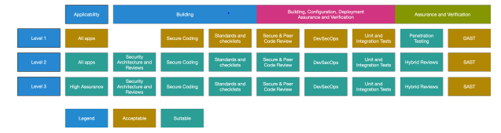

Documentation and other non-source artifacts need to be
validated and verified. Security practitioners should ensure documentation
verification and validation are incorporated into the security testing strategy and
that testing exists within the system engineering life cycle. This is especially
true for regulated industries or sensitive information, when lack of diligence may
result in undo risk. All supporting artifacts, including documents, must be
accurate, complete, and compliant with organization-defined standards and
requirements.
Objectives
Describe documentation verification and validation.
Explain the structure and goals of OWASP’s Application Security Verification
Standard (ASVS).
Overview
Software documentation includes installation procedures and
setup instructions, error messages, and documents that inform customers of features
after a new build. Almost all software is accompanied and delivered with some level
of documentation. Installation and setup instructions, documentation of error
messages, user guides, and release notes are common artifacts that need to be
verified and validated. General tools and techniques are similar across various
artifacts. For brevity, this section will simply refer to all non-source code
artifacts as documents for the remainder of the section.
Documentation Verification
Software document verification is the process of ensuring the
authenticity and integrity of documentation. Organizations may opt to review the
author identity, origin, and integrity of the documents. Document verification, like
other testing, can be done manually or automatically. Tools such as encryption,
watermarking, or digital signatures can provide confidence during verification.
Documentation Validation
Software document validation is the process of ensuring the
correctness, standards conformity, policy conformity, and consistency of documents.
Organizations may opt to review contents, format, or document structure. This
process also includes data validation, especially with artifacts such as logs or
test results. As with verification, document validation can be done manually or
automatically. Tools such as style guides, checkers (e.g., grammar, spelling), or
schema validators can assist with validation. The format of artifacts has a large
impact on the feasibility of document test automation.
Manual and Automated Document
Review
Document verification and validation can be achieved manually by
leveraging Quality Assurance, Security, or other stakeholders to review, inspect,
and test the documents. Manual verification and validation can be time-intensive and
prone to errors. To safeguard against these potential issues, organizations
typically implement policies, procedures, checklists, and guidelines to increase
consistency and reduce efforts.
Software tools can be used to automate some document review by
scanning and analyzing documents. Documents are generally checked against
organizationally defined rules and criteria. Automatic document checking can be
faster, cheaper, and more accurate than manual methods, but it is generally cost
prohibitive to automate everything. A phased approach of two passes—a first
automatic and a second manual review based on the automation generated
results—generally provides the best balance. Security practitioners should recognize
that automation requires greater technical skill and includes maintenance
considerations.
OWASP Application Security
Verification Standard (ASVS)
OWASP’s Application Security Verification Standard (ASVS) lays
out control objectives and security verification requirements for software. It may
be used to assess the degree of trust in Web applications, provide developers with
guidance on security controls, and provide a basis for specifying application
security verification requirements in contracts.
The OWASP Application Security Verification Standard (ASVS) has
two main goals:
Help organizations develop and maintain secure applications.
Allow security service vendors, security tool vendors, and consumers to align
their requirements and offerings.
Application Security Verification
Levels
ASVS defines three security verification levels, with each level
increasing in depth. Each ASVS level contains a list of security requirements. Each
of these requirements can also be mapped to security-specific features and
capabilities that must be built into software by developers.

Figure 7: OWASP Application Security Verification Standard
4.0 Levels9
ASVS Level 1. An application achieves ASVS Level 1 if it adequately
defends against application security vulnerabilities that are easy to discover
and included in the OWASP Top 10 and other similar checklists. Level 1 is the
bare minimum that all applications should strive for.
ASVS Level 2. An application achieves ASVS Level 2 (or Standard) if it
adequately defends against most of the risks associated with software today.
Level 2 is typically appropriate for applications that handle significant
business-to-business transactions, including those that process healthcare
information, or implement business-critical or sensitive functions.
ASVS Level 3. ASVS Level 3 is the highest level of verification within
the ASVS. This level is typically reserved for applications that require
significant levels of security verification, such as those that may be found
within areas of military, health and safety, critical infrastructure,
etc.10
ASVS lays out control objectives and security verification
requirements in more than a dozen areas. The requirements were developed with the
following objectives in mind:
Use as a metric. Provide application developers and application owners
with a yardstick with which to assess the degree of trust that can be placed in
their Web applications.
Use as guidance. Provide guidance to security control developers as to
what to build into security controls to satisfy application security
requirements.
Use during procurement. Provide a basis for specifying application
security verification requirements in contracts.11
Documentation Verification and Validation (6.3)
Documentation and other non-source artifacts need to be validated and verified. Security practitioners should ensure documentation verification and validation are incorporated into the security testing strategy and that testing exists within the system engineering life cycle. This is especially true for regulated industries or sensitive information, when lack of diligence may result in undo risk. All supporting artifacts, including documents, must be accurate, complete, and compliant with organization-defined standards and requirements.
Objectives
Overview
Software documentation includes installation procedures and setup instructions, error messages, and documents that inform customers of features after a new build. Almost all software is accompanied and delivered with some level of documentation. Installation and setup instructions, documentation of error messages, user guides, and release notes are common artifacts that need to be verified and validated. General tools and techniques are similar across various artifacts. For brevity, this section will simply refer to all non-source code artifacts as documents for the remainder of the section.
Documentation Verification
Software document verification is the process of ensuring the authenticity and integrity of documentation. Organizations may opt to review the author identity, origin, and integrity of the documents. Document verification, like other testing, can be done manually or automatically. Tools such as encryption, watermarking, or digital signatures can provide confidence during verification.
Documentation Validation
Software document validation is the process of ensuring the correctness, standards conformity, policy conformity, and consistency of documents. Organizations may opt to review contents, format, or document structure. This process also includes data validation, especially with artifacts such as logs or test results. As with verification, document validation can be done manually or automatically. Tools such as style guides, checkers (e.g., grammar, spelling), or schema validators can assist with validation. The format of artifacts has a large impact on the feasibility of document test automation.
Manual and Automated Document Review
Document verification and validation can be achieved manually by leveraging Quality Assurance, Security, or other stakeholders to review, inspect, and test the documents. Manual verification and validation can be time-intensive and prone to errors. To safeguard against these potential issues, organizations typically implement policies, procedures, checklists, and guidelines to increase consistency and reduce efforts.
Software tools can be used to automate some document review by scanning and analyzing documents. Documents are generally checked against organizationally defined rules and criteria. Automatic document checking can be faster, cheaper, and more accurate than manual methods, but it is generally cost prohibitive to automate everything. A phased approach of two passes—a first automatic and a second manual review based on the automation generated results—generally provides the best balance. Security practitioners should recognize that automation requires greater technical skill and includes maintenance considerations.
OWASP Application Security Verification Standard (ASVS)
OWASP’s Application Security Verification Standard (ASVS) lays out control objectives and security verification requirements for software. It may be used to assess the degree of trust in Web applications, provide developers with guidance on security controls, and provide a basis for specifying application security verification requirements in contracts.
The OWASP Application Security Verification Standard (ASVS) has two main goals:
Application Security Verification Levels
ASVS defines three security verification levels, with each level increasing in depth. Each ASVS level contains a list of security requirements. Each of these requirements can also be mapped to security-specific features and capabilities that must be built into software by developers.
Figure 7: OWASP Application Security Verification Standard 4.0 Levels9
ASVS lays out control objectives and security verification requirements in more than a dozen areas. The requirements were developed with the following objectives in mind:
Requirement areas include:
9 OWASP Application Security Verification Standard 4.0; https://owasp.org/www-pdf-archive/OWASP_Application_Security_Verification_Standard_4.0-en.pdf; retrieved July 2023.
10 Ibid.
11 Ibid.